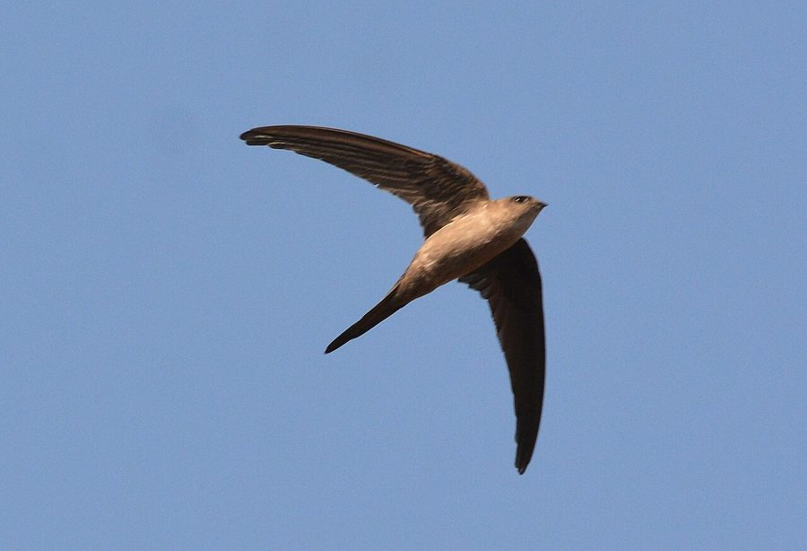

ताड़-चट्रीAsian Palm Swift
Cypsiurus balasiensis · Apodidae · BRD-0042

- Scientific name
- Cypsiurus balasiensis (J.E.Gray, 1829)
- Family
- Apodidae
- Hindi
- ताड़-चट्री
- Status here
- native
- IUCN
- LC
When to look कब देखें
Present all year.
ताड़-चट्री / Asian Palm Swift
Cypsiurus balasiensis (J.E.Gray, 1829) — Apodidae
ताड़-चट्री (एशियन पाम स्विफ्ट) — पूर्वी उत्तर प्रदेश के ग्रामीण इलाकों में पाया जाने वाला एक छोटा, फुर्तीला और हमेशा उड़ते रहने वाला निवासी पक्षी है। इसका शरीर पतला, पंख पतले और हंसिया के आकार (sickle-shaped) के होते हैं, और इसकी पूंछ लंबी और गहरी दो-फांक (deeply forked) होती है। यह पक्षी ताड़ (Palmyra Palm) और खजूर [FLR-0042 Wild Date Palm] के पेड़ों के साथ बहुत गहरा संबंध रखता है। यह अपना छोटा सा प्यालेनुमा घोंसला ताड़ के पत्तों के निचले हिस्से पर अपनी लार (saliva) और पंखों को आपस में चिपका कर बनाता है। यह अपनी लगभग पूरी ज़िंदगी हवा में उड़ते हुए छोटे कीड़ों को पकड़ने में बिताता है और कभी ज़मीन पर नहीं उतरता।
Quick Identification त्वरित पहचान
| Feature | Description |
|---|---|
| Size | Tiny swift (11–13 cm total length); wingspan 28–30 cm |
| Colouration | Uniformly pale grey-brown to dark brown body; slightly paler rump |
| Wings & Tail | Extremely long, narrow, sickle-shaped wings; deeply forked, scissor-like tail |
| Flight | Rapid, erratic flight with quick wingbeats and gliding; constantly in the air |
| Association | Almost always seen flying close to palm trees (Toddy Palm, Wild Date Palm) |
Field tip: Look up around tall palm trees. Watch for tiny, dark brown, arrow-like birds flying with high-speed, erratic sweeps, accompanied by constant high-pitched twittering.
Morphology आकारिकी
Biometrics (typical measurements in the northern Indian plains):
| Measurement | Range |
|---|---|
| Total length | 110–130 mm |
| Wing (flattened chord) | 110–123 mm |
| Tail | 50–68 mm |
| Tarsus | 7–9 mm |
| Bill (culmen from base) | 4–6 mm |
| Weight | 7–10 g |
Plumage: The plumage is uniformly dark grey-brown to dark earthy-brown, with a slight greenish sheen on the upperparts under bright sunlight. The underparts are slightly lighter brown. The throat and chin are pale grey. The wings are long, narrow, and dark brown. The tail is deeply forked; when closed, it appears long and needle-like, but when spread during flight turns, it reveals a distinct scissor-like shape.
Bare parts: The bill is extremely small, broad-based, and black. The eyes are dark brown. The legs and feet are very small, dark brownish-black, with all four toes pointing forward (pamprodactylous arrangement), which allows the bird to cling to vertical surfaces but prevents it from perching on branches or walking on the ground.
Vocalisations
Asian Palm Swifts are highly vocal while flying in groups.
- Contact Call: A rapid, high-pitched, shrill twittering or screaming trill: ti-ti-ti-tee-tee or sree-sree-sree, given continuously in flight.
- Alarm Call: A sharper, louder sreeeee when threatened or when raptors are near.
Ecological Role पारिस्थितिक भूमिका
Aerial insectivore.
- Pest regulation: They forage entirely on the wing, consuming thousands of tiny flying insects (mosquitoes, midges, termites, small beetles, and winged ants) daily, regulating pest populations over agricultural fields.
- Palm dependency: Their distribution is entirely linked to the presence of palms, making them a key indicator species for the ecological health of old palm groves and rural tree cover.
Life Cycle / Phenology जीवन चक्र
- Breeding season: March to August, with breeding activity peaking before the heavy monsoon rains.
- Nesting: They build a unique nest that is an engineering marvel.
- Nest structure: A tiny, flat, half-cup structure made of wind-blown feathers, down, and fine grass, glued together and attached to the vertical underside of a palm leaf using the bird's sticky saliva.
- Nesting site: Glued to the underside of a living leaf frond of palms like Palmyra or [FLR-0042 Wild Date Palm]. The leaf dangles and sways in the wind, but the nest remains glued.
- Clutch size: 2 pure white, elongated eggs.
- Egg security: The eggs are glued directly to the nest cup using saliva to prevent them from falling out as the palm leaf sways in the wind. The parents incubate the eggs by clinging vertically to the leaf and pressing their breast against them.
- Incubation: 18–22 days, shared by both parents.
- Fledging: The chicks hatch naked and blind. They use their strong claws to cling tightly to the vertical nest structure from a very young age. They are fed insect boluses by both parents. Fledging takes 35–40 days, and the young fly directly out into the air from the hanging nest.
Host Plants or Prey आहार
Primary food items:
- Insects: Consumes exclusively flying insects caught mid-air, including mosquitoes, midges, aphids, flying termites, small flying beetles, and winged ants.
Predators / Natural Enemies शत्रु
- Raptors: Shikra (Accipiter badius) and Merlin (winter visitor) hunt swifts in open flight.
- Arboreal Predators: Tree pies, house crows, and tree snakes (Dendrelaphis) raid nests, searching the underside of palm fronds for eggs and chicks.
Agricultural / Human Relevance कृषि प्रासंगिकता
Natural insect control. By feeding on flying termites, mosquitoes, and crop-damaging bugs over rice and sugarcane fields, they provide a valuable biological pest control service for farmers in Basti.
They rely on traditional human landscapes where tall palms are preserved on field boundaries. The cutting down of old palms for timber or toddy tapping directly destroys their breeding habitats.
Expected Locally स्थानीय रूप से अपेक्षित
Not a field record. Written from published accounts for eastern Uttar Pradesh. No confirmed local sighting yet — if you have seen it, that is what the atlas needs.
अभी तक स्थानीय पुष्टि नहीं। यह विवरण प्रकाशित स्रोतों से है, किसी अवलोकन से नहीं।
A common resident throughout the rural parts of Basti district. They are regularly observed swarming around groves of [FLR-0042 Wild Date Palm] and tall Palmyra palms along irrigation canals and village borders. Flocks are often seen swooping low over ponds to drink on the wing by skimming the water surface.
Distribution वितरण
Global range: Widespread across the Oriental region, from India and Sri Lanka through Southeast Asia to the Philippines.
In India: Common resident throughout the plains and lower hills where palms are present.
In Uttar Pradesh: Common resident across the state, particularly in rural districts with palm cultivation.
In Basti district / eastern UP: Observed in all rural blocks where date palms and palmyra palms are preserved.
Research Questions शोध प्रश्न
Anyone can investigate these | कोई भी इन प्रश्नों की जाँच कर सकता है
- Do palm swifts prefer nesting on Palmyra palms over Wild Date Palms in Basti? — Survey palm trees and record nest counts per tree species.
- How do swifts feed their young when high winds cause palm leaves to sway violently? — Observe feeding frequencies under different wind conditions.
- What is the chemical composition and adhesive strength of the saliva used to glue eggs to the nest? — Analyze abandoned nests after the breeding season.
- How does the seasonal emergence of winged termites affect the foraging patterns of palm swifts? / दीमकों (पंखों वाले) के निकलने से ताड़-चट्री के शिकार करने के तरीकों पर क्या प्रभाव पड़ता है? — Record flock sizes during termite hatches.
- Does the removal of lower dead fronds from palms by farmers affect the nesting success of these birds? / किसानों द्वारा ताड़ के सूखे पत्तों को हटाने का इन पक्षियों के घोंसला बनाने की सफलता पर क्या प्रभाव पड़ता है? — Compare nests on pruned vs. unpruned trees.
Similar Species मिलती-जुलती प्रजातियाँ
| Species | Key Difference | हिंदी |
|---|---|---|
| [BRD-0043 House Swift] (Apus affinis) | Larger; stockier; white rump; square tail; nests under concrete arches and roof eaves | अबाबील — बड़ा, सफेद कमर, चौकोर पूँछ |
| Barn Swallow (Hirundo rustica) | Deep steel-blue upperparts; rufous throat; long outer tail streamers; perches on wires | अबाबील/सवालो — नीला-काला शरीर, बिजली के तारों पर बैठना |
| Dusky Crag Martin (Ptyonoprogne concolor) | Sooty-brown body; short tail with white spots; nests on rocky cliffs or stone buildings | चट्टानी अबाबील — सुस्त भूरा, पूँछ पर सफ़ेद धब्बे |
Field rule: Small size, uniform pale brown colouration, deeply forked tail, and constant association with palm trees identify the Asian Palm Swift.
Taxonomy & Classification वर्गीकरण
Original description. John Edward Gray described the Asian Palm Swift as Cypcelus balasiensis in 1829 in Griffith's edition of Cuvier's Animal Kingdom (Vol. 7, p. 117). The type locality was India (Balasore, Odisha). The genus name Cypsiurus combines the Greek kupselos (swift) and oura (tail). The specific name balasiensis refers to the type locality, Balasore.
Subspecies. Globally, 4 subspecies are recognised. The subspecies present in UP is:
| Subspecies | Authority | Range | Notes |
|---|---|---|---|
| C. b. balasiensis | (J.E.Gray, 1829) | India, Nepal, Sri Lanka, Myanmar | UP subspecies; nominate form |
Family and order placement. Placed in the order Apodiformes, family Apodidae.
Phylogenetic notes. Cypsiurus is a genus of swifts specialized for nesting on palms, with sister species Cypsiurus parvus found in Africa.
IUCN status rationale. Listed as Least Concern (LC) due to its extremely large range, high local abundance, and stable global population, though highly dependent on palm conservation.
Photo Gallery फोटो गैलरी
References संदर्भ
- Gray, J. E. (1829). In Griffith, E. The Animal Kingdom by the Baron Cuvier. Vol. 7. London, p. 117. [original description]
- Ali, S. & Ripley, S. D. (1999). Handbook of the Birds of India and Pakistan. Vol. 4. Oxford University Press, New Delhi.
- Grimmett, R., Inskipp, C. & Inskipp, T. (2011). Birds of the Indian Subcontinent. 2nd ed. Christopher Helm, London.
- Chantler, P. & Driessens, G. (2000). Swifts: A Guide to the Swifts and Treeswifts of the World. 2nd ed. Pica Press, Sussex.
- BirdLife International (2024). Cypsiurus balasiensis. IUCN Red List of Threatened Species. Ver. 2024.
- GBIF Occurrence Data — Cypsiurus balasiensis, Uttar Pradesh (2010–2025).
Source file: species/fauna/birds/asian_palm_swift.md